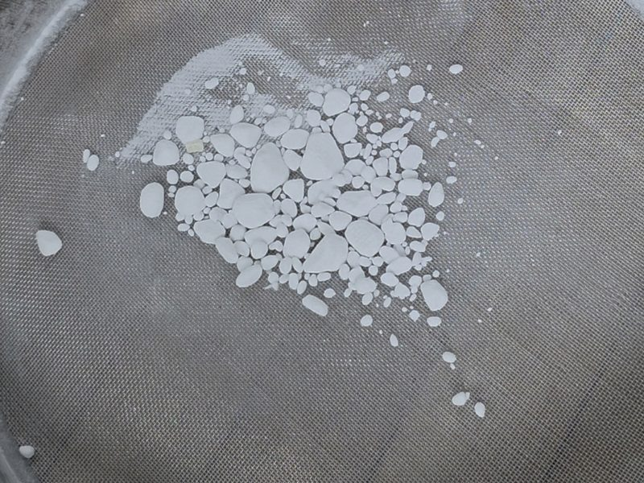

How to Store Baking Soda, Baking Powder, and the Rest of Your Pantry
That clumpy box of baking soda is quietly ruining your bakes. Here's how to test it, fix it, and store it — plus every other ingredient on your shelf that needs an airtight container to survive.
That old box of baking soda in the back of your pantry? There's a good chance it's the reason your last batch came out flat, or soapy, or browned like a map of nowhere. And it isn't just the soda — half the stuff on your baking shelf is slowly going bad on you, and almost all of it comes down to one thing: an open bag.
Here's what's actually happening, and how I keep it from happening in our bakery.
Why old baking soda ruins your bakes
Baking soda is hygroscopic — it pulls moisture right out of the air. That's the exact reason it works sitting in your fridge: it grabs moisture and odors out of the environment. Great for your fridge. Terrible for your batter.
When it pulls in that moisture, it clumps. And a clump is a problem, because it's a concentrated pocket of leavening. Wherever that clump lands you get far too much soda — soapy, bitter, almost metallic on the tongue, with uneven browning and uneven spread. Everywhere a clump didn't land, you get too little, so it's flat. One tired box gives you both problems in the same cookie.

So before it goes anywhere near your batter, break it up. You can grind it with your hands — honestly it feels kind of good — or run it through a fine sieve and watch the clumps catch in the mesh. After a good sieve it should fall through loose and fine, like powder, not grit. I show the whole thing in grind down your baking soda.
Is it even still good? Test it in ten seconds
Don't guess — test it. Drop a spoonful of baking soda into a splash of vinegar or lemon juice; it should fizz hard and fast. A weak, lazy fizz means it's tired, so replace it. For baking powder, drop a spoonful into hot water — it should bubble up immediately. If it just sits there, it's done.
Quick bit of science, because it's the reason powder dies faster than soda: baking powder reacts twice — once when it gets wet, and again when it hits the heat of the oven. That's what "double-acting" means, and it's why any moisture sneaking into the container sets off that first reaction early, so half your lift is gone before you even bake. I break down the difference in baking soda vs. baking powder.
How I store the leaveners
I'm not leaving either one in the bag or the box — that's the whole mistake. Both go straight into an airtight container, kept somewhere dry, cool, and away from strong smells. Baking soda especially will take on whatever's around it, so don't park it next to the garlic or the coffee. Sealed up tight it lasts a long time; once it's been open and clumping, it's already compromised. Baking powder is the fragile one — airtight is non-negotiable, and keep the scoop dry, because a wet spoon will kill it from the inside. Label the container with the date you opened it. Sounds fussy. Saves you a thrown-out batch.
The rest of your pantry has the same problem
Here's why this goes well past leaveners. A huge chunk of baking staples are either hygroscopic, odor sponges, or high in natural oils that go rancid — and every one of them wants an airtight container. This is most of what's on our dry-storage shelf:
- Coconut flour — maybe the thirstiest ingredient in the kitchen. It pulls moisture and smells out of the air like a sponge and clumps hard. Airtight, cool, dry; if it ever smells sour, it's gone.
- Almond and other nut flours — loaded with natural oils, so they go rancid and bitter faster than you'd think. Airtight, in the fridge or freezer. Give it a sniff before you use it.
- Whole-grain gluten-free flours (oat, brown rice, sorghum, buckwheat, teff) — the germ and oils go off faster than refined flour. Airtight, fridge or freezer. More on this in flour handling.
- Starches (cornstarch, tapioca, arrowroot, potato) — they clump, pull moisture, and pick up odors. Airtight and bone dry.
- Gums and binders (xanthan, guar, psyllium) — extremely hygroscopic; catch any humidity and they set into a brick. Small airtight container, dry scoop only. See how to use psyllium husk.
- Cocoa powder — clumps and grabs every smell near it. Airtight, away from your spices. More in get the most out of your cocoa powder.
- Powdered sugar — clumps at the first hint of moisture and absorbs smells. Airtight.
- Brown sugar — the opposite problem: it dries out and goes rock hard because it's losing moisture. Airtight to keep it in; a terracotta disc or even a slice of bread in the container keeps it soft.
- Spices — they lose their punch and pull in moisture. Airtight, dark, cool, and off the shelf right above the stove, where the heat cooks the life out of them.
- Yeast — moisture and air are what kill it. Airtight, fridge or freezer once it's open.
- Salt — clumps with humidity. Airtight (a few grains of rice in the shaker is the old trick).
- Chocolate — absorbs odors and "blooms" that dull gray film when the temperature swings. Airtight, cool, away from strong smells; skip the fridge if you can.
- Nuts, seeds, shredded coconut, dried fruit — the oily ones go rancid, the dried fruit dries out or molds. Airtight and cool; freezer for the long haul.
- Vanilla and extracts — airtight, dark, cool. The alcohol keeps them for ages; just cap them tight so they don't evaporate down.
The one rule for the whole bakery
If you remember nothing else: airtight, dry, cool, dark, away from strong smells, labeled with the date, first in, first out. That's the entire game. Good containers cost almost nothing, and they pay for themselves the first time you don't throw out a flat, soapy batch because of a box of baking soda that quietly died six months ago. Store it right and this stuff lasts. Leave it in the bag and you're baking with a guess.